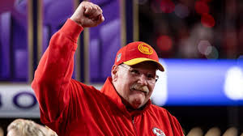
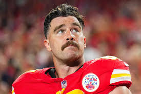

Three-peat HERE WE COME
Check out the Chiefs Home Page they own this
place
ANDY

Patrick
Travis
The Kansas City Chiefs are on the cusp of making NFL history, setting their sights on an unprecedented three-peat: winning three consecutive Super Bowl titles. After back-to-back championships in the 2022 and 2023 seasons, they’ve cemented their status as the NFL’s modern dynasty. Led by the brilliant duo of head coach Andy Reid and quarterback Patrick Mahomes, the Chiefs have turned the league into their own highlight reel. Sorry, Buffalo and Cincinnati fans—you might want to cover your eyes. The combination of Mahomes’ wizardry, Travis Kelce’s reliable hands, and a defense that’s getting scarier than a Steelers fan on a Monday morning commute has made the Chiefs a nightmare for any team hoping to stop their reign.
Of course, chasing a third title isn’t all barbecue and touchdowns. Historically, no team has managed a three-peat in the Super Bowl era—yes, not even the so-called dynasties like the Cowboys in the 90s or those 2000s Patriots. Injuries, roster changes, and, let’s be honest, every other team playing their best game when the Chiefs are in town, make this a tough hill to climb. To their credit, the rest of the league is trying—bless their hearts. Even the Broncos, who’ve been searching for a quarterback like it’s an episode of *American Pickers*, are doing their best to compete. Staying healthy, maintaining chemistry, and adapting to opponents' relentless attempts to dethrone them will be key. But let’s face it, right now, the AFC is just Mahomes’ playground, and everyone else is waiting in line for the swings.
If the Chiefs pull off the three-peat, it won’t just be history; it’ll be legendary, a mic-drop moment in the annals of the NFL. They’d join the ranks of the greatest dynasties, leaving fans of other franchises to wonder what it feels like to win a ring again (looking at you, Jets). More than titles, this run symbolizes an era of dominance fueled by talent, innovation, and that Mahomes magic. As the league watches with bated breath—and other fanbases quietly seethe—the Chiefs’ quest for the three-peat isn’t just about glory. It’s a reminder that right now, in the NFL kingdom, everyone else is just fighting for second place.
- Touchdowns
- Swift Haters
- haters gonna
- hate hate hate
- Eagles suck